Este estudo apresenta a identidade visual da Reigotta, e-commerce de roupas fitness para o público feminino. O trabalho partiu de cinco problemas da empresa, organizados pelo método RACI de identidade. O símbolo, um batimento cardíaco que forma uma coroa, ficou responsável por passar energia; o contraste de rosa e verde neon, por destacar a marca no feed; e a fotografia, por gerar confiança em quem compra sem provar.
Palavras-chave: identidade visual; moda fitness; e-commerce; método RACI; cor.
1Contexto
Moda fitness é um dos segmentos que mais cresce no varejo online. A compra acontece pelo celular, quase sempre a partir de um post ou de um story, e a cliente decide sem provar a peça.
Visualmente, muitas marcas do segmento seguem o mesmo caminho: preto, cinza e fotos de estúdio parecidas. A Reigotta precisava de uma marca com energia, que fosse lembrada no meio do feed e passasse confiança para a primeira compra.
2Base teórica
Na Reigotta a cor tinha um trabalho pesado: fazer a marca aparecer num feed cheio de marcas parecidas. Cada cor carrega sensações que a gente aprende com o tempo; o rosa puxa o feminino e o delicado, mas ao lado de uma cor oposta ele ganha força (Heller, 2013). Juntar o rosa com o verde neon foi isso: tirar o rosa do delicado e levar pro esporte.
Como a marca vende pela internet, a identidade também precisava funcionar dentro da loja. O Steve Krug tem uma regra boa pra qualquer site: a pessoa não pode precisar pensar pra saber o que fazer (Krug, 2014). Marca clara, com cor e símbolo fáceis de reconhecer, ajuda nisso.
A matriz RACI, que organiza todo o resto, vem da gestão de projetos. No capítulo 4 eu conto como adaptei ela para o design.
3Problemas de design
Antes de desenhar, os problemas. Saíram da conversa com o cliente e da análise do segmento:
- P1Vender sem loja físicaNo e-commerce, a marca é a vitrine: precisa passar confiança antes da primeira compra.
- P2Passar energia e movimentoRoupa fitness fala de treino e ritmo. A marca não pode parecer parada.
- P3Se destacar no feedA disputa acontece no Instagram, entre dezenas de marcas parecidas.
- P4Falar com a mulher que treinaO público quer se ver forte e bonito, de igual pra igual.
- P5Marcar o produto físicoEtiqueta, sacola e cartão chegam junto com a peça e precisam reforçar a marca.
4Método RACI
O método RACI de identidade é meu, e parte de uma ideia simples: design existe pra resolver problema da empresa. Então cada elemento da identidade precisa ter uma função clara. Nada entra só pra enfeitar.
Na gestão de projetos, a matriz RACI cruza tarefas com pessoas e define quem executa, quem responde pelo resultado, quem é consultado e quem só é informado (PMI, 2017). No método, as tarefas viram os problemas da empresa e as pessoas viram os elementos da identidade: símbolo, tipografia, cor, grafismos, imagem, tom de voz e movimento.
O processo tem quatro passos:
- Levantar os problemas. Conversa com o cliente e análise do segmento pra listar o que a marca precisa resolver.
- Montar a matriz. Para cada problema, definir o papel de cada elemento com as letras abaixo.
- Desenhar. Cada elemento é criado a partir das responsabilidades que recebeu na matriz.
- Conferir. No fim, cada problema é revisto: o elemento que responde por ele fez a parte dele?
Responde
O elemento principal pra resolver o problema. Só um por problema.
Resolve junto
Elementos que trabalham junto no problema.
Apoia
Reforçam o trabalho, mas não carregam o problema.
Acompanha
Não atuam no problema, mas ficam coerentes com o resto.
5Matriz da identidade
A matriz mostra o papel de cada elemento em cada problema. Cada elemento foi desenhado a partir dela.
| Problema | Símbolo | Tipografia | Cor | Grafismos | Imagem | Tom de voz | Movimento |
|---|---|---|---|---|---|---|---|
| P1Vender sem loja física | C | R | C | I | A | R | I |
| P2Passar energia e movimento | A | I | R | C | C | C | R |
| P3Se destacar no feed | C | C | A | R | R | C | C |
| P4Falar com a mulher que treina | I | C | C | I | R | A | I |
| P5Marcar o produto físico | R | R | C | A | I | I | I |
6Mapa da marca
Energia que veste
7Símbolo
O símbolo junta duas ideias em um traço só. É a linha de um batimento cardíaco, que fala de treino, ritmo e saúde. E as três pontas formam uma coroa, que representa a tradição da marca.
Por ser um traço contínuo e simples, ele funciona pequeno, na etiqueta e no ícone do perfil, e grande, como grafismo na sacola.
- Pulso. Uma linha reta, como no monitor cardíaco.
- Batimento. A linha desce, sobe num pico alto e desce de novo: o desenho de um batimento.
- Coroa. O pico central e as duas pontas laterais formam as três pontas de uma coroa.
- Traço arredondado. Pontas e cantos arredondados deixam o símbolo leve e feminino.
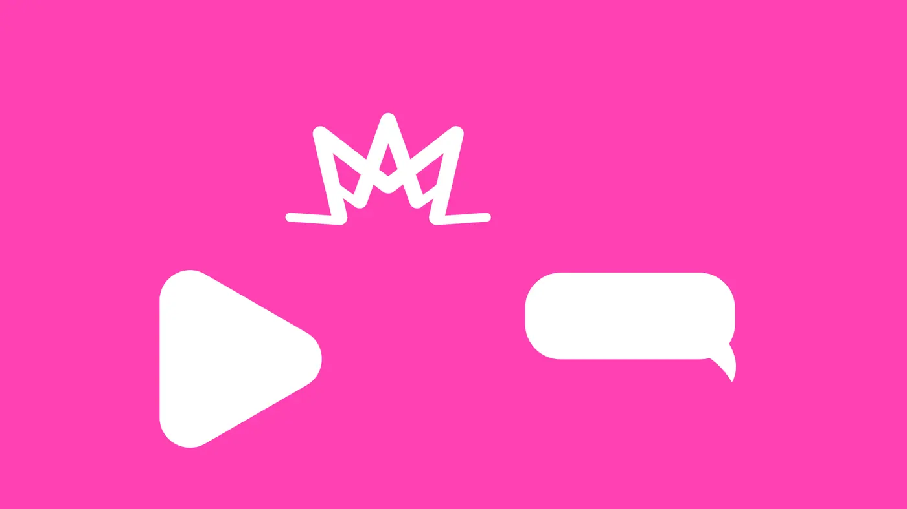
Esboço geométrico feito para explicar a construção. A arte final está nos arquivos da marca.
8Tipografia
A tipografia ajuda a passar leveza e movimento (P2) e mantém a marca feminina e atual (P4). O logotipo usa letras minúsculas e arredondadas, de traço fino; nas campanhas, títulos fortes em caixa alta dão a energia.
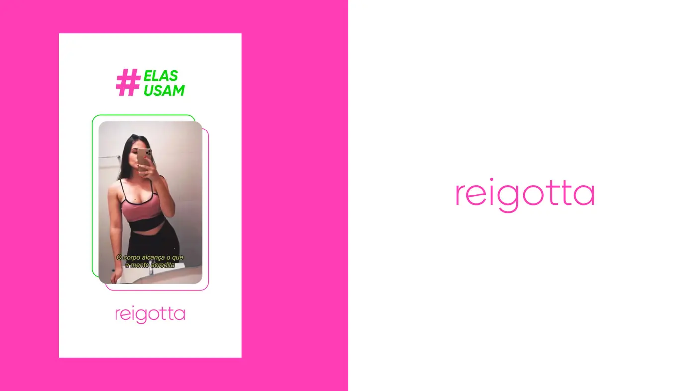
- Logotipo
- “reigotta” em minúsculas, traço fino e cantos arredondados: leve, como a roupa.
- Campanhas
- Títulos em caixa alta e peso forte, como “NOVA COLEÇÃO” e “TOP BOXEADORA”.
- Apoio
- Uma sem serifa simples para preço, tamanho e informações da etiqueta.
9Cor
A cor responde por destacar a marca no feed (P3). Rosa e verde neon ficam em lados opostos do círculo cromático: juntos, vibram e chamam atenção. Heller (2013) liga o rosa ao feminino; o verde neon traz a energia do esporte.
Proporção de uso sugerida:
Códigos HEX medidos nas peças. Confira os Pantone em um guia físico antes de imprimir.
10Grafismos e imagem
O próprio traço do batimento vira grafismo: aparece grande na sacola e cortando as fotos de campanha, como no cartaz “TOP BOXEADORA”. Ícones simples (coroa, play e balão) completam o sistema nas redes.
Fotos de mulheres reais em movimento, com luz natural e a roupa em destaque. No e-commerce a foto faz o papel do provador, por isso responde por gerar confiança (P1).
11Tom de voz e movimento
Animado e direto, com frases de incentivo e hashtags que criam comunidade, como “#elasusam” e “conecte-se ao natural”. Responde por falar com a mulher que treina (P4).
Proposto para Reels e stories: cortes no ritmo do batimento e o símbolo pulsando na abertura e no fim dos vídeos (P2).
12Aplicações
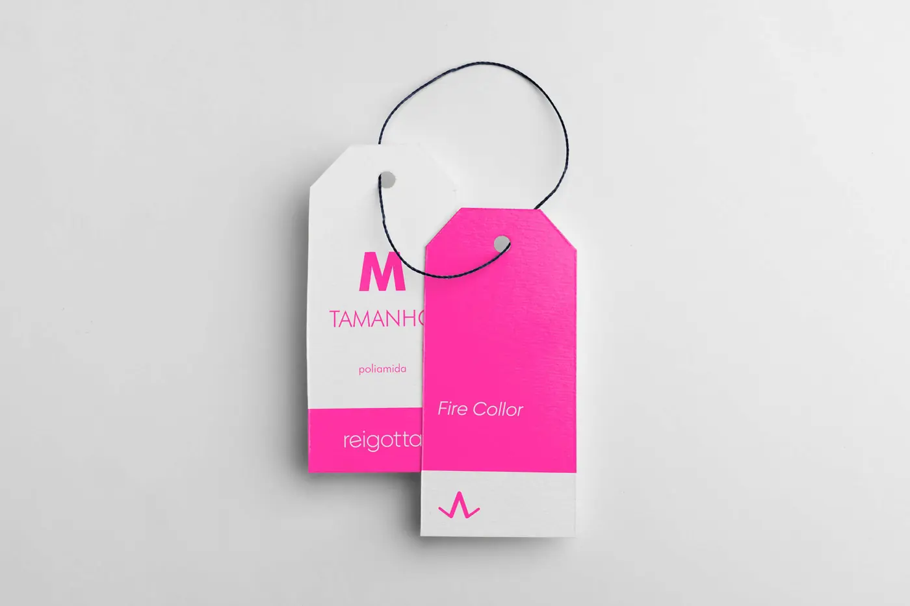
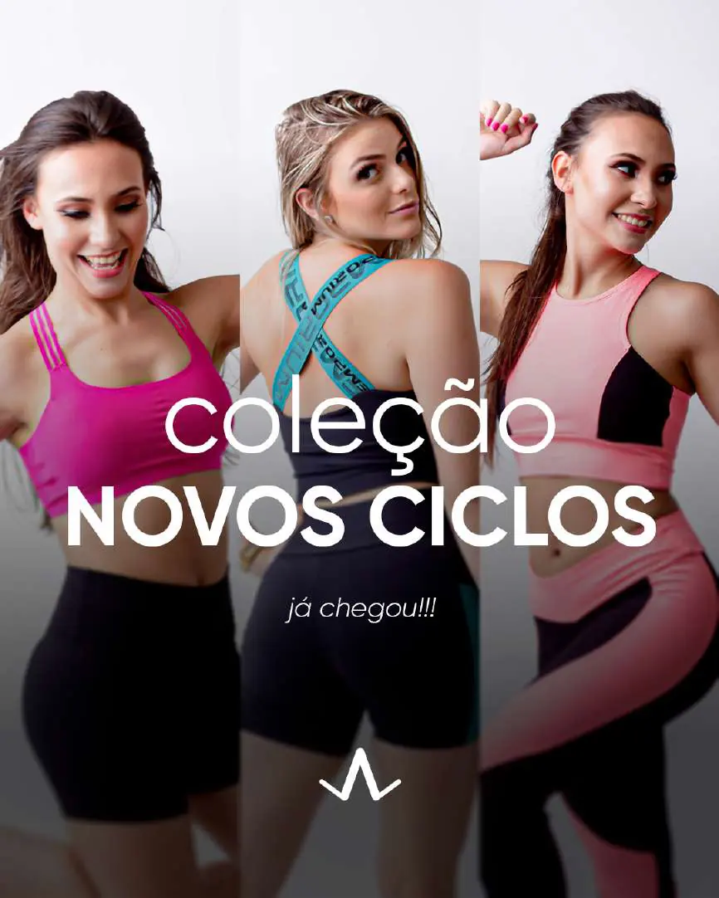
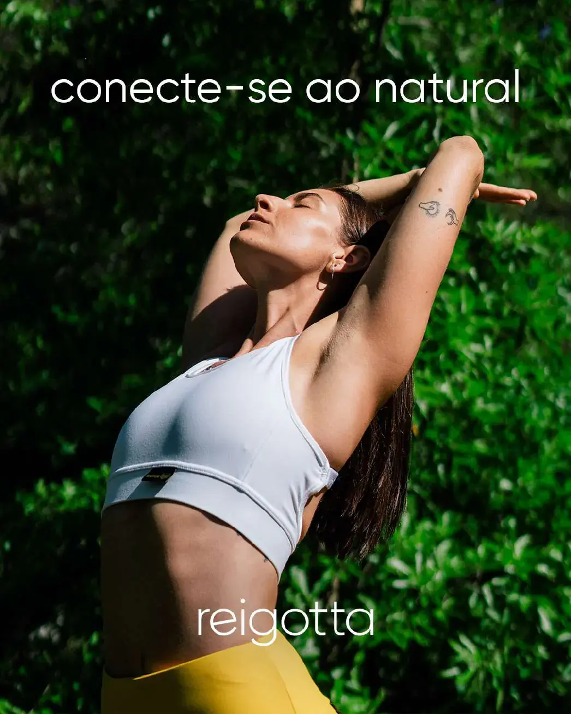
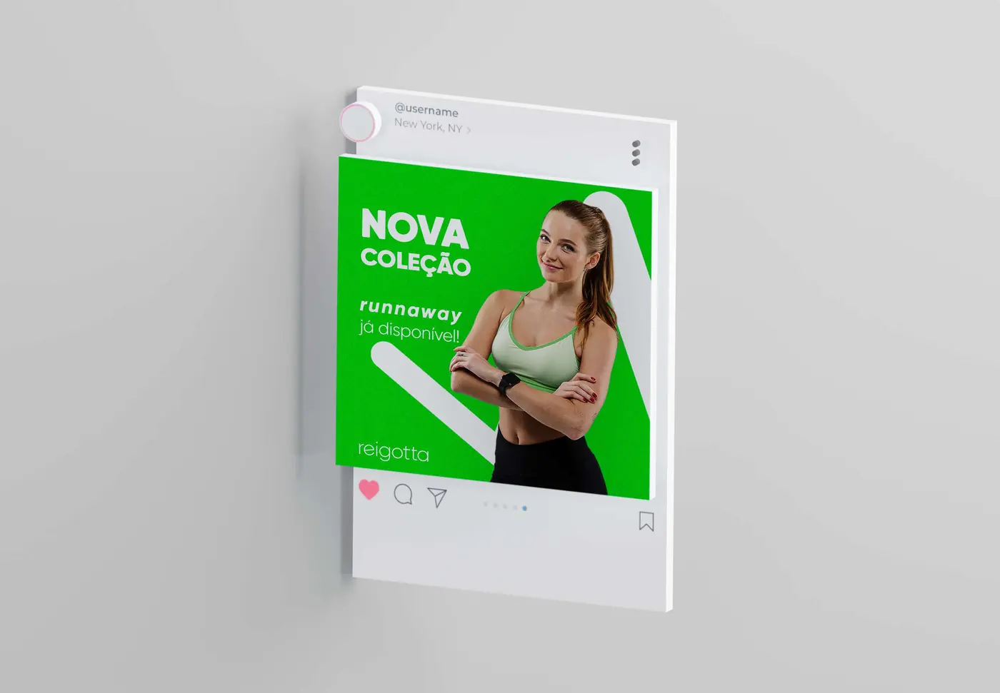
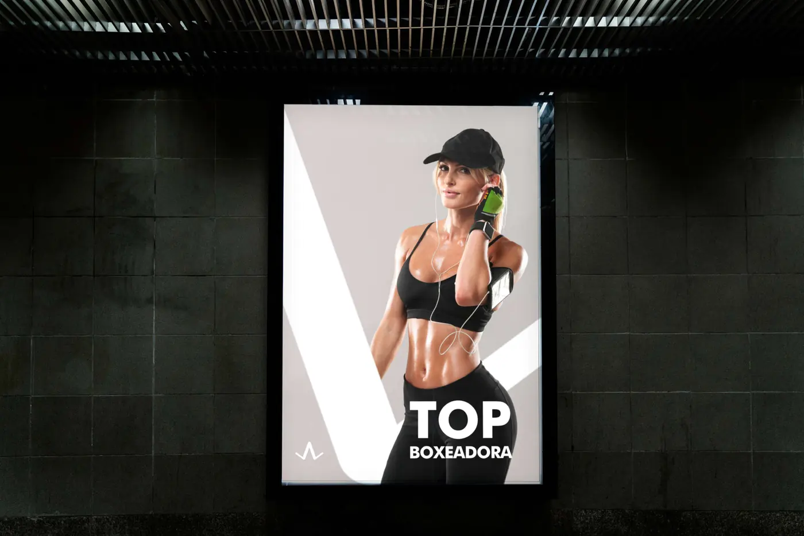
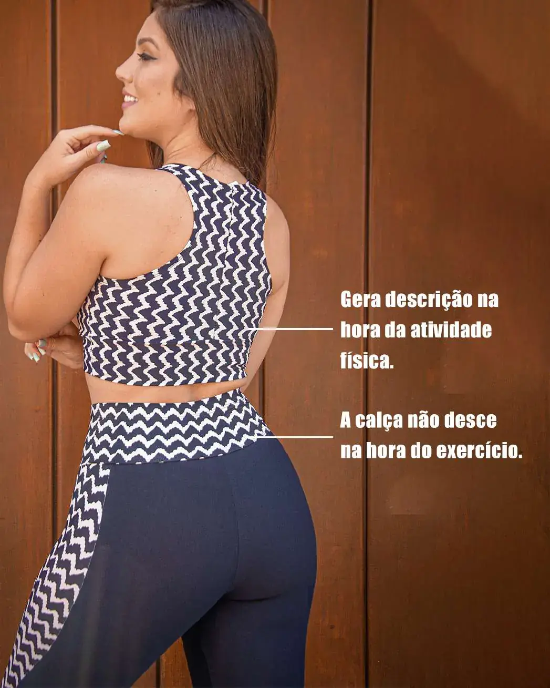
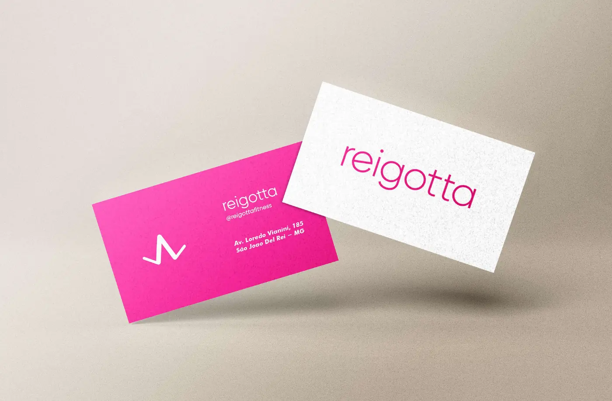
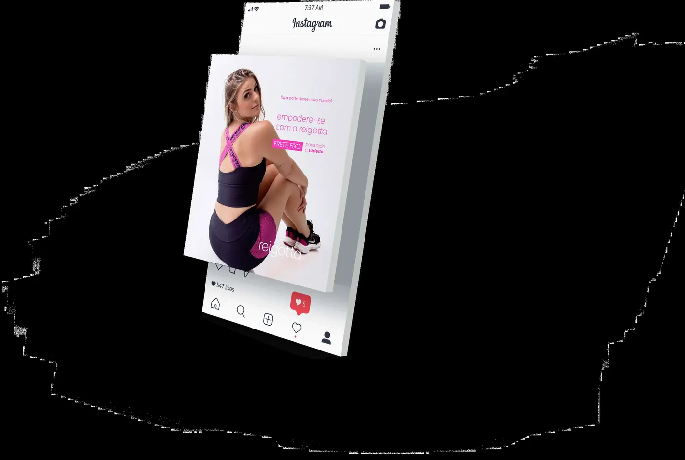
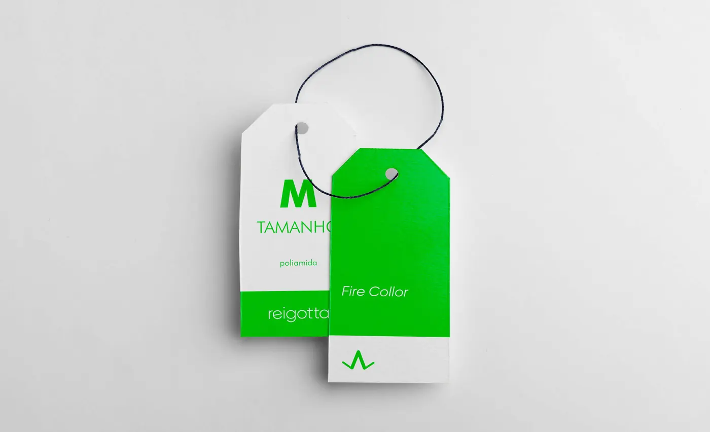
13Site
E-commercePara a Reigotta, o site não é vitrine: é a loja. Sem loja física, cada venda depende de a cliente confiar na marca e conseguir comprar sem atrito.
Um e-commerce próprio vende 24 horas, não depende da resposta no direct e deixa o Instagram fazer o que ele faz melhor: levar gente até a loja. Com catálogo por categoria, tabela de medidas, Pix e cartão e cálculo de frete na página do produto, a dúvida vira compra.
E a loja é da marca: os dados de quem compra, o carrinho abandonado e o histórico de pedidos ficam com a Reigotta, e não com uma plataforma de terceiros.
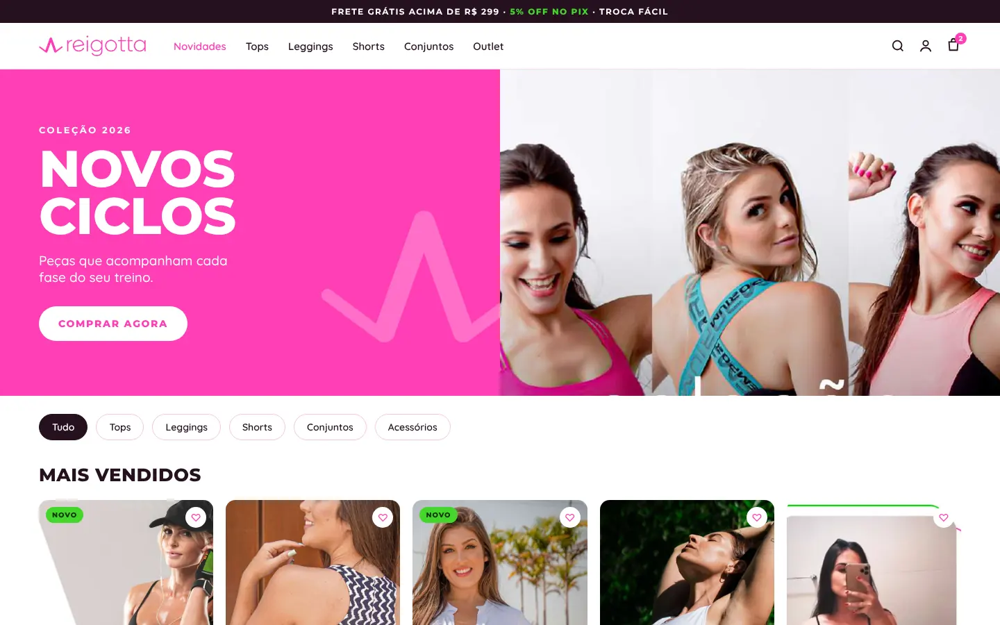
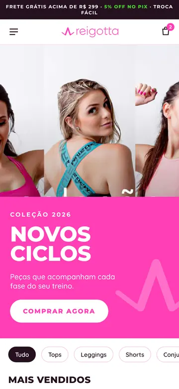
- Catálogo por categoria e coleção
- Tabela de medidas na página do produto
- Pix, cartão e cálculo de frete
- Carrinho e checkout pensados para o celular
Proposta de site desenhada pela turzin. para a marca.
14Resultados
De volta à matriz: cada problema conferido pelo elemento que responde por ele.
15Considerações finais
A Reigotta mostra como uma marca de e-commerce precisa funcionar primeiro na tela do celular, sem perder força no produto físico que chega à casa da cliente. Os próximos passos são levar o sistema para a loja virtual e para modelos de conteúdo das redes.
Referências
- HELLER, Eva. A psicologia das cores: como as cores afetam a emoção e a razão. São Paulo: Gustavo Gili, 2013.
- KRUG, Steve. Não me faça pensar: uma abordagem de bom senso à usabilidade web e mobile. Rio de Janeiro: Alta Books, 2014.
- PROJECT MANAGEMENT INSTITUTE. Um guia do conhecimento em gerenciamento de projetos (Guia PMBOK). 6. ed. Newtown Square: PMI, 2017.